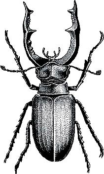

PHOBIE
"Henri Wallon a montré que l'agoraphobie n'était, au fond, qu'une variété de la peur de tomber. Elle n'est pas une peur de rencontrer des hommes, mais une peur de ne pas rencontrer d'appui." Gaston Bachelard
Peur irraisonnée d'un danger inexistant voire irréel, sont atteintes de phobie les personnes qui, dans une situation donnée, ou en présence d'un élément spécifique, ne présentant pas de danger immédiat, sont saisies d'un effroi qu'elles savent déraisonnable mais ne peuvent contrôler.
Généralement, les phobies ne gênent que modérément mais peuvent devenir invalidantes dans certaines situations sociales. Autre que de produire de l'anxiété qu'il faut surmonter, elles s'avèrent à long terme énergivores lorsque il s'agit de mettre en place des stratégies compliquées d'évitement en influant sur la vie sociale.
Si toutes les phobies restent handicapantes, certaines comme la phobie sociale et sa glossophobie ou la simple idée de parler en public peuvent devenir impossible. L'agoraphobie ou la peur des lieux publics ou encore la claustrophobie et sa peur des lieux clos peuvent véritablement gâcher la vie quotidienne. Et il existe plus de 500 phobies répertoriées. Suivant les courants thérapeutiques, plusieurs explications sont données à leur genèse. En hypnose, on s'oriente non sur la cause mais sur la solution pour les stopper en utilisant des outils comme la dissociation et la désensibilisation. Les thérapies cognitivo-comportementales parlent d'un mauvais conditionnement cérébro-comportemental, générant, entre autre une suractivation des structures limbiques comme l'hippocampe et l'amygdale.
Mais axons nous quelques instant sur le regard psychanalytique qui considère Les phobies, ces peurs irraisonnées déclenchées par une circonstance sans danger, sont psychanalytiquement définies par le déplacement (projection), sur un objet, une personne ou une situation du monde extérieur, d’une figure angoissante de l’univers psychique. Elles se distinguent, par leur irrationalité, des peurs devant un danger réel ou devant ce qui rappelle un traumatisme antérieur. Elles concernent donc des situations ou des objets dépourvus de dangerosité. La phobie implique ainsi une distorsion partielle des possibilités de jugement appliquées au monde extérieur, une altération partielle du sens de la réalité, ou du moins leur contamination par un élément fantasmatique qui vient les troubler. Partiel, ce trouble rattache les phobies à la névrose, car l’ensemble du fonctionnement de l’esprit n’est pas atteint, mais des phobies multiples, intenses, extensives nous rapprochent parfois des frontières de la psychose. Certaines phobies entraînent une crainte permanente, obsédante, d’être confronté à la situation phobogène, ce qui pose la question du rapport entre obsessions et phobies. Contrainte à des répétitions incessantes de gestes visant à annuler l’angoisse sans parvenir à chasser l’idée parasite obsédante, la personne obsessionnelle est plus exposée à l’angoisse que celle qui est simplement phobique.
La phobie est universelle, car c’est un mécanisme normal de l’enfance : peur du loup, du noir, des fourmis, etc. Mais la persistance des symptômes phobiques est souvent source d’une gêne considérable et d’un combat psychiquement coûteux. C’est par exemple la lutte épuisante de l’agoraphobique qui veut réussir à sortir faire ses courses ou chercher ses enfants, son effort pour trouver une personne accompagnante servant d’objet contra-phobique. Ce sont les excitants à dose dangereuse pour affronter les situations publiques. C’est la phobie, rationalisée par l’idée de pouvoir se dégager en cas d’accident, qui empêche de boucler sa ceinture de sécurité. Ce sont, fréquemment, les choix d’un travail proche mais moins intéressant ou moins rémunéré, pour éviter d’avoir à prendre les transports en commun.
Le psychanalyste Paul Denis décrit, outre les zoophobies (telle l’arachnophobie, pour la phobie des araignées), les phobies des personnes (l’ ochlophobie ou peur de la foule) et les phobies des espaces, les phobies liées au corps et les phobies complexes, composites (comme les phobies scolaires), mais aussi les psychophobies, qui suscitent des conduites d’évitement psychiques visant le fonctionnement mental ou le monde intérieur.
Généralement, les phobies ne gênent que modérément mais peuvent devenir invalidantes dans certaines situations sociales. Autre que de produire de l'anxiété qu'il faut surmonter, elles s'avèrent à long terme énergivores lorsque il s'agit de mettre en place des stratégies compliquées d'évitement en influant sur la vie sociale.
Si toutes les phobies restent handicapantes, certaines comme la phobie sociale et sa glossophobie ou la simple idée de parler en public peuvent devenir impossible. L'agoraphobie ou la peur des lieux publics ou encore la claustrophobie et sa peur des lieux clos peuvent véritablement gâcher la vie quotidienne. Et il existe plus de 500 phobies répertoriées. Suivant les courants thérapeutiques, plusieurs explications sont données à leur genèse. En hypnose, on s'oriente non sur la cause mais sur la solution pour les stopper en utilisant des outils comme la dissociation et la désensibilisation. Les thérapies cognitivo-comportementales parlent d'un mauvais conditionnement cérébro-comportemental, générant, entre autre une suractivation des structures limbiques comme l'hippocampe et l'amygdale.
Mais axons nous quelques instant sur le regard psychanalytique qui considère Les phobies, ces peurs irraisonnées déclenchées par une circonstance sans danger, sont psychanalytiquement définies par le déplacement (projection), sur un objet, une personne ou une situation du monde extérieur, d’une figure angoissante de l’univers psychique. Elles se distinguent, par leur irrationalité, des peurs devant un danger réel ou devant ce qui rappelle un traumatisme antérieur. Elles concernent donc des situations ou des objets dépourvus de dangerosité. La phobie implique ainsi une distorsion partielle des possibilités de jugement appliquées au monde extérieur, une altération partielle du sens de la réalité, ou du moins leur contamination par un élément fantasmatique qui vient les troubler. Partiel, ce trouble rattache les phobies à la névrose, car l’ensemble du fonctionnement de l’esprit n’est pas atteint, mais des phobies multiples, intenses, extensives nous rapprochent parfois des frontières de la psychose. Certaines phobies entraînent une crainte permanente, obsédante, d’être confronté à la situation phobogène, ce qui pose la question du rapport entre obsessions et phobies. Contrainte à des répétitions incessantes de gestes visant à annuler l’angoisse sans parvenir à chasser l’idée parasite obsédante, la personne obsessionnelle est plus exposée à l’angoisse que celle qui est simplement phobique.
La phobie est universelle, car c’est un mécanisme normal de l’enfance : peur du loup, du noir, des fourmis, etc. Mais la persistance des symptômes phobiques est souvent source d’une gêne considérable et d’un combat psychiquement coûteux. C’est par exemple la lutte épuisante de l’agoraphobique qui veut réussir à sortir faire ses courses ou chercher ses enfants, son effort pour trouver une personne accompagnante servant d’objet contra-phobique. Ce sont les excitants à dose dangereuse pour affronter les situations publiques. C’est la phobie, rationalisée par l’idée de pouvoir se dégager en cas d’accident, qui empêche de boucler sa ceinture de sécurité. Ce sont, fréquemment, les choix d’un travail proche mais moins intéressant ou moins rémunéré, pour éviter d’avoir à prendre les transports en commun.
Le psychanalyste Paul Denis décrit, outre les zoophobies (telle l’arachnophobie, pour la phobie des araignées), les phobies des personnes (l’ ochlophobie ou peur de la foule) et les phobies des espaces, les phobies liées au corps et les phobies complexes, composites (comme les phobies scolaires), mais aussi les psychophobies, qui suscitent des conduites d’évitement psychiques visant le fonctionnement mental ou le monde intérieur.

La prise en compte comme une phobie de l’évitement par certains sujets de leur monde interne et de leurs fantasmes est un des apports importants, cliniquement très précieux. Notons également l’attention portée aux phobies qui concernent le corps : les dysmorphophobies, bien sûr, mais aussi la phobie du surpoids, au cœur des troubles alimentaires, la peur de rougir ( éreutophobie) ou de transpirer, la nosophobie, forme atténuée d’hypocondrie ; aux phobies portant directement sur le corps, Paul Denis joint celles qui concernent des activités corporelles impliquant la crainte de s’exposer, d’exposer publiquement son corps en activité ou de déclencher des sensations indésirables : manger ou parler en public, danser ou marcher, être secoué par un véhicule, éprouver des sensations sexuelles. Parmi les phobies des personnes, il souligne celle des enfants, plus fréquente qu’on ne le croit, celle des personnes âgées ou d’autres catégories auxquelles on refuse de devoir s’identifier (ce qui entraîne des troubles des liens sociaux), et l’homophobie. Aussi les phobies scolaires relèvent de deux registres : simples, elles sont liées à l’angoisse qu’il n’arrive quelque chose aux parents pendant l’absence ; plus profondes et ancrées, elles impliquent souvent un état de dépersonnalisation, une "angoisse sans nom", associant des angoisses de perte et de séparation, l’agoraphobie du trajet, la claustrophobie et la phobie des rapports sociaux à l’école, parfois masqué sous "l’ennui" de l’enfant doué, et comportant toujours la connivence inconsciente d’une mère généralement elle-même phobique. Et la phobie est adaptative face à l'avancée de la société, avec un rapport au lien social souffrant au travers la peur de perdre son smartphone qu'est la nomophobie !
Alors les phobies sont-elles un symptôme ou une maladie ? Leur interprétation ne se réduit pas à la névrose mais suppose la prise en compte de tout le contexte ; en revanche, leur traitement selon un modèle médical (avec la classification du DSM-V : personnalités évitantes, trouble panique avec ou sans agoraphobie, phobies sociales) empêche de reconnaître leur signification.
Egalement, la psychanalyse considère la phobie comme une expression du désir du sujet de trouver des représentants/représentations à sa vie pulsionnelle dangereuse et menaçante, évitant ainsi l’agir destructif. C’est une tentative d’élaboration d’un conflit interne, permettant de maintenir un sentiment de continuité de la vie psychique. Mais, la solution phobique est précaire et provisoire et investit des objets peu propices au développement de la pensée ; la phobie échoue à créer des représentations nouvelles et l’objet phobogène comme l’objet contra-phobique viennent plutôt générer des carences dans les représentations.
Anna Freud, la fille de Sigmund, introduit quelques différences avec la théorisation freudienne classique. Il faut qu’un certain développement psychique soit atteint pour qu’une phobie puisse se développer, et elle distingue entre les angoisses phobiques et les « peurs archaïques », qui renvoient à des états de terreur, de panique, de détresse et de désorganisation profonde. La phobie suppose au contraire une externalisation, rendue possible par une condensation symbolique de ce qui était jusque-là diffus, et par un déplacement, offrant une issue alternative à la désorganisation traumatique.. Rapprochons ce regard avec les thérapies cognitivo- comportementales qui définissent la construction d'une phobie autour de 6-8 ans .
Gérer les phobies avec l’hypnose est souvent très rapide (une séance !) si la réaction phobique n'est pas due à une substitution symbolique ni à un déplacement émotionnel ou que ce n'est pas un moyen de satisfaire d'autres besoins.
Alors les phobies sont-elles un symptôme ou une maladie ? Leur interprétation ne se réduit pas à la névrose mais suppose la prise en compte de tout le contexte ; en revanche, leur traitement selon un modèle médical (avec la classification du DSM-V : personnalités évitantes, trouble panique avec ou sans agoraphobie, phobies sociales) empêche de reconnaître leur signification.
Egalement, la psychanalyse considère la phobie comme une expression du désir du sujet de trouver des représentants/représentations à sa vie pulsionnelle dangereuse et menaçante, évitant ainsi l’agir destructif. C’est une tentative d’élaboration d’un conflit interne, permettant de maintenir un sentiment de continuité de la vie psychique. Mais, la solution phobique est précaire et provisoire et investit des objets peu propices au développement de la pensée ; la phobie échoue à créer des représentations nouvelles et l’objet phobogène comme l’objet contra-phobique viennent plutôt générer des carences dans les représentations.
Anna Freud, la fille de Sigmund, introduit quelques différences avec la théorisation freudienne classique. Il faut qu’un certain développement psychique soit atteint pour qu’une phobie puisse se développer, et elle distingue entre les angoisses phobiques et les « peurs archaïques », qui renvoient à des états de terreur, de panique, de détresse et de désorganisation profonde. La phobie suppose au contraire une externalisation, rendue possible par une condensation symbolique de ce qui était jusque-là diffus, et par un déplacement, offrant une issue alternative à la désorganisation traumatique.. Rapprochons ce regard avec les thérapies cognitivo- comportementales qui définissent la construction d'une phobie autour de 6-8 ans .
Gérer les phobies avec l’hypnose est souvent très rapide (une séance !) si la réaction phobique n'est pas due à une substitution symbolique ni à un déplacement émotionnel ou que ce n'est pas un moyen de satisfaire d'autres besoins.
EN RELATION


PEUR
CROYANCE
COMPORTEMENT
ANXIETE
PERSONNALITE